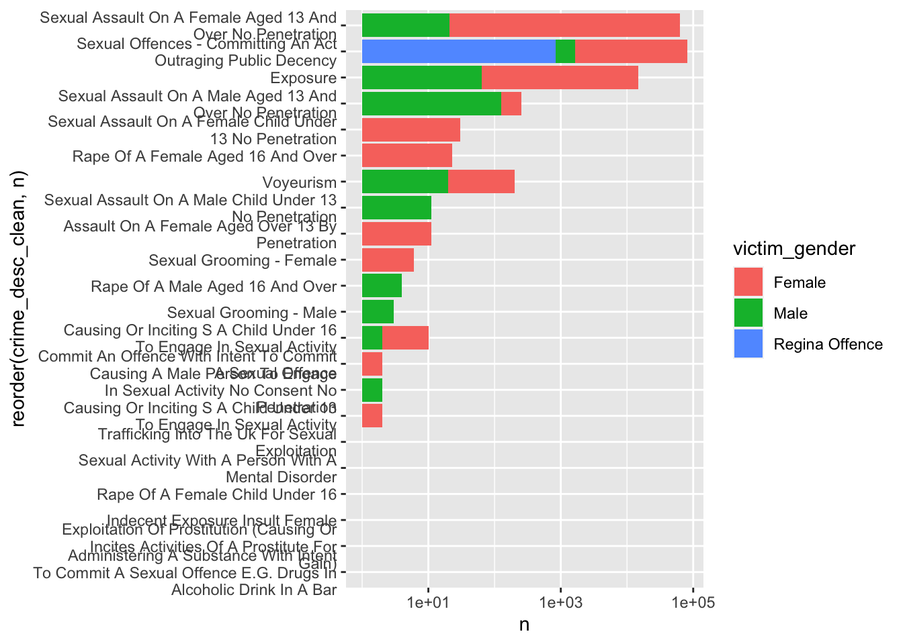

On 3rd March, 2021, Sarah Everard left her friend’s house, and was then not seen again. After extensive searching, the Metropolitan police have arrested a man on suspicion of her murder, and found human remains in Ashford, Kent. You can read the statement here.
As we learn more about Sarah Everard, women everywhere are coming forward sharing their stories and expressing anger and feelings of unsafety. I find it so striking that in response to such a horrific and extreme event, almost every woman I know or follow on Twitter has an experience they can share, in the fashion of #MeToo. It seems everyone has a story that fits the profile of a “near-miss” of such an event.
Yesterday, I received an email circulated to myself and my colleagues in Criminology at University of Manchester (and I assume others around the country) containing a request from the BBC. The email came from a journalist on BBC TV’s 6 and 10 o’clock news, who explained that the request was for a piece looking at the safety of women in light of the murder of Sarah Everard. Specifically, the email said:
We wanted to do a short pre-recorded interview with a criminologist to talk about how rare it is for women to be murdered by strangers and whether women face any more safety risks these days than they have over the past decades.
My first thought was that this was an odd angle to take, especially weighed up against the absolute flood of shared experiences that I am watching sweep over my Twitter feed.
Specifically activating my research nerd spidey senses, this whole situation made me think of literature on the topic of “near-misses”. In fields such Aviation, Nuclear Power Technology, Military operation and Air Transport, Railway Safety and many others, it is common to consider the reporting and study of near misses in order to gain insight into otherwise rare events. The underlying assumption (proposed by HW Heinrich in the book Industrial Accident Prevention. A Scientific Approach) is that the same causal mechanisms underlie the near-misses as the more rare but serious accidents. This idea was what interests me in measuring fear of crime experiences for example, and something I explored in my PhD thesis specifically a case study working with Camden LGBT forum looking at reporting of worry about hate crime and how that can identify problematic hotspots and hot times for possible victimisation.
Anyway, I think my point is, just because the ultimate most horrible outcome (Fatality/injury) may be rare, the many other incidents (Damage and Near-misses) are much more common, and in themselves have serious consequences (just read some of the stories people are posting on Twitter) show that there is an existing problem, and dismissing this as a ‘rare event’ seems to me to undermine the extent of the problem.
Now I definitely wouldn’t write this post if I didn’t have some underlying data to back this up, so let’s get to it. I’ve been interested in under-reported crimes, of which sexual harassment is one of the most well-known ones. And so I actually have on hand have some data from British Transport Police I acquired from a FOI request a while ago, to have a look at what is going on with Sexual Offences in London (those which are reported).
Prevalence of sex offences on London transport
I have data on 9968 reports of sex offences made to the British Transport Police in London between 2012-01-01 and 2020-11-18.
Some of these reports are of historic offences. Here I will concentrate on the 9333 which were reported within 7 days of the incident.
According to these data, recorded sex offences on London Underground/ DLR/ National Rail in London have been on the increase. (Note an obvious drop once COVID-19 shut down public transport).

Of course this is recorded crime and it is influenced by factors other than prevalence of victimisation, specifically reporting patterns.
In an earlier paper we explored how specifically TfL’s Report it To Stop It Campaign had a positive effect on reporting of sexual offences on transport, specifically LU/DLR/National Rail. You can read the full paper here: https://link.springer.com/article/10.1057/s41284-017-0117-y (or open access version here: http://irep.ntu.ac.uk/id/eprint/39107/), but I copy below our change point analysis which demonstrates how reported sexual offences increased specifically with waves of activity around Report It To Stop It:

So it does seem that better reporting is one reason why we see this increase in recorded sexual offences. So while concluding that these are on the rise may not be appropriate, there is really no way that we can say that this is a problem which is resolved, or going away. I mean, just look specifically at how sexual offences do pick back up again on transport once the transport modes open again after the COVID-19 lockdown. Here is a zoom in on what happened since lockdown:
So even in the post-covid era, passengers on the (supposedly much less crowded?) London Underground/ DLR/ National Rail are reporting on average 10 incidents a week. In the year before COVID, this was 29 incidents per week.
Is that a big number? To compare, we need to look at the montly rate, since for other crime types I have to use the open data from police.uk (only available at month as a temporal resolution). So if we look at the past year, from March 2019 to March 2020 there were about 118 sexual offences reported per month. This is higher than the monthly average recorded incidents of Robbery (78). On the other hand, it is about 1/8th of the prevalence of the most commonly reported crime, theft from person (960). While theft person (which includes pickpocketing) may be more common, it is also more likely to be reported (less of a barrier) and arguably less harmful, as theft person includes crimes that involve theft directly from the victim (including handbag, wallet, cash, mobile phones) but without the use or threat of physical force (police.uk). On the other hand, the offences in the sex offences data I have include things like Rape, Assault by Penetration, and Sexual Assault on a Child Under 13.
Types of sex offences
So in the data set which I have we can look at the different typse of Sexual Offences which had been reported. Let’s focus on the data collected from after the last wave of the Report It To Stop It campaign (February 2016) up to the March 2019 when the first COVID-19 lockdown changed our travel and going outside behaviours, so we get some “typical” data. The rest of this post will be working with these data.
In total that is 4605 observations (incidents).
Of these, the most common type of incident is Sexual Assault On A Female Aged 13 And Over No Penetration with 3122 incidents in total.
All the crime types in the data can be seen here:
QUESTION: should I log the axis?
No log:

Log:
QUESTION: ANYTHING EXCITING ABOUT CRIME TYPES?
Women’s victimisation
Now of course I am looking here at all sexual offences, and we are talking about women’s safety, and if reading/following Caroline Criado Perez has taught me anything it is that we need to look at the sex-disaggregated data. For the victim gender variable, I grouped “not specified”, “Unknown”, “Indeterminate”, and NA all as missing NA values.
Some crime types specify the gender in the description, so that will be of course only one of the other, but for those who don’t we can replicate the crime type looking at victimisation by gender:
Q: for this definitely log???

QUESTION: OH MY GOD BTP WHAT IS THIS DATA QUALITY?!?!? - seriously though what should I do? which variable to trust?
Victim profile?
Now there are often conversations about how women behave/dress/other nonsense that can be broadly summarised under the category of “victim blaming” that often gets brought up in conversations about womens’ safety. So let’s have a look at whether there is a typical victim profile.
Overall in our dataset, or the incidents where the crime was not a Regina Offense (n = 3649) and victim gender was recorded (n = 3649), 3392 of the cases the victim was Female (93%), while only 257 (7%) cases was the victim Male.
The youngest victim in the data set was 3 years old, while the oldest was 82. If we look at the age distribution we can see that it follows a normal distribution, skewed slightly right.
We might conclude that younger passengers are more affected, until we look at ridership statistics. This is for all Rail in England, and from 2016, but if you look at the age distribution for women, the pattern should look familiar:

Source: Rail Passengers Factsheet 2016: https://assets.publishing.service.gov.uk/government/uploads/system/uploads/attachment_data/file/590562/rail-passengers-factsheet-2016-revised.pdf
While I don’t have more demographic data in my data set, I am feeling pretty confident in concluding that the victim profile for sexual offences on transport is: women who use public transport.
Walking alone late at night…
Okay well what if it has to do with walking around (or taking public transport) alone late at night? We can look at the times of day:
Surprise surprise, the peak victimisation incidents are happening at rush hour!!!
Now it’s likely that there are different profiles for the different crime types. Let’s take the most common one out as an example:
QUESTION: SHOULD I DO THIS FOR ALL? DOes it make sense just for the most common? That will obvs dominate the alltogether one
QUESTION: What else is interesting for me to include??